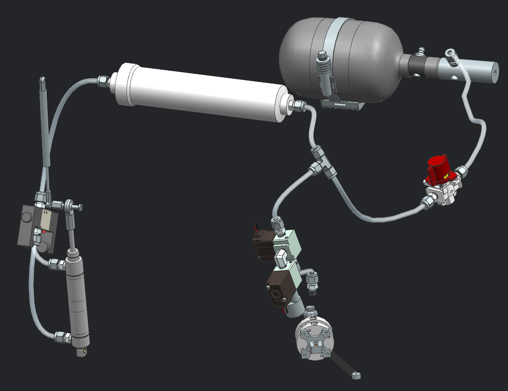

Alex Montello | Formula SAE Work
PF27 Rotating Assembly Preliminary Design
- Completed design and analysis for a MVP hub assembly, connecting the tire to the nonrotating assembly and transmitting drivetrain torque
- Analyzed all features with hand calculations based on structural mechanics principles and conservative assumptions
- Conducted thorough FEA to validate system under 20 yield and ultimate load cases using conservative and realistic material properties
- Completed preliminary motion study and manufacturability/serviceability checks with the tools we have
- Successfully demonstrated integration to uprights, brakes, and drivetrain
- Analyzed system progress towards goals, comparison to previous systems, and cost
PF26 Pedalbox Analysis
- Conducted detailed analysis of brake pedal system against conservative loads using FEM
- Created an accurate, minimally complex mesh using both 3D and 2D shell meshing techniques
- Assigned conservative contacts, joints, boundary conditions, and material properties to guarantee safety
- Completed hand calculations for throttle stop stress and pedal retainer stress concentrations to supplement FEA
- Analyzed geometry of throttle pedal travel to map position sensor signals to pedal travel
- Designed and manufactured a machined and welded brake pedal structural validation fixture to use a load cell to validate pedal strength
PF26 Pedalbox Machining
- Created CAM programs for 10 setups worth of CNC milling operations including contours, pockets, drills, and bores
- Inspected and assembled all tools used for machining and manually probed all operations using VPS
- Used 3 axis vertical mills to machine throttle pedal, throttle pedal base, and throttle pedal rails (6 parts including spares)
- Created detailed drawings using GD&T and met all specified tolerances
- Manually machined a complex pneumatic cylinder mount on a mill
PF26 Pneumatics Development

- Assembled the PF26 pneumatic shifting system on the car using NPT fittings and PTFE lines
- Selected an appropriately sized air accumulator to add to the system based on pneumatic capacitance and design requirements
- Implemented and monitored air accumulator and saw reduction in shift times by up to 76%
- Documented shortcomings of PF26 shifting system function and serviceability to be addressed in PF27 vehicle